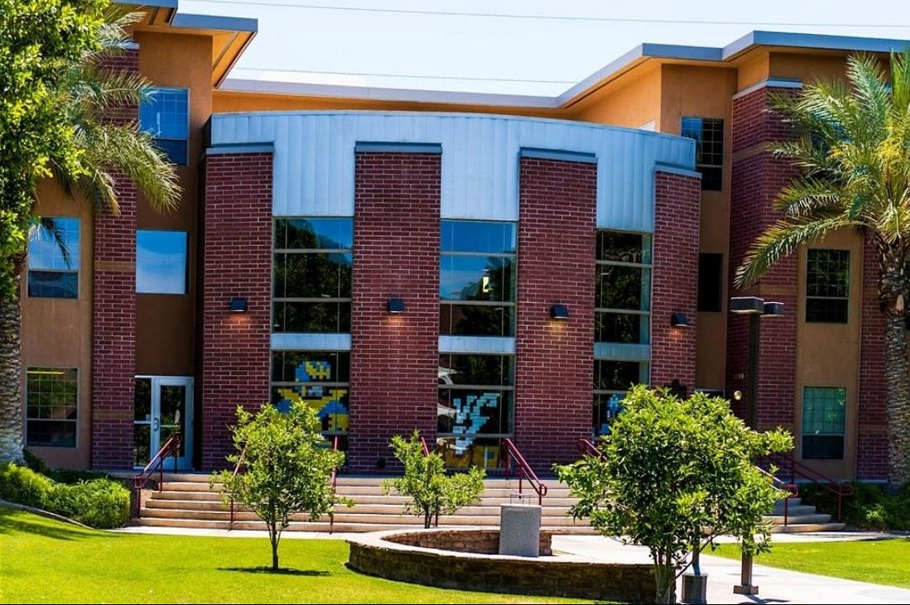

Max's Education
Max is currently majoring in Digital Making and Fabrication at the Univerity of Advancing Technologies in Tempe, Arizona.
Max is currently majoring in Digital Making and Fabrication at the Univerity of Advancing Technologies in Tempe, Arizona.
I've been attending UAT since the start of 2021. I am currently majoring in Digital Making and Fabrication while also working torwards getting a degree in Embedded Robotics. I am currently on track to graduate in the Fall of 2023.
University of Advancing Technology - 2625 W. Baseline Tempe, AZ 85283 Click Here!
Digital Making & Fabrication Description
As an inventor and innovator, it is now possible to prototype, evaluate and bring creations to market by way of digital fabrication tools. The Digital Maker and Fabrication (DMF) degree prepares graduates to design and build new technology devices by combining design theory, programming, materials, human factors and prototyping with 3D print and other maker technologies. Students in this program will model and design objects using 3D software. Students will also learn to inform their designs based upon choosing the best materials for each design element. Students will learn how to program the hardware and electronics driving their devices, using tools such as C++ and Arduino in ways that support creating smart devices and internet enabled devices. By learning how to effectively use maker prototyping technologies such as 3D printers, digital cutters, CNC fabric devices and virtual reality tools, students are able to rapidly visualize and prototype devices. DMF students become adept at the process of refining technology creations and devices to make them ready for market and within design and fabrication settings.
Digital Making & Fabrication Objectives